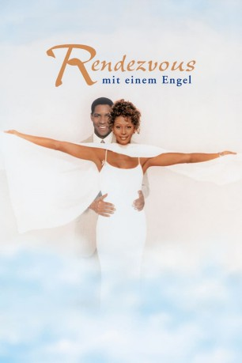
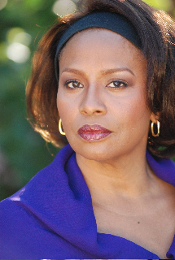
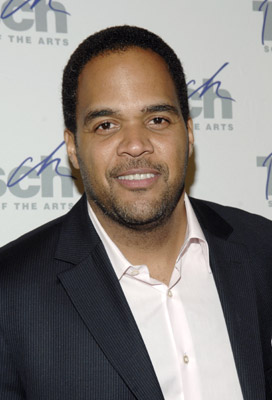
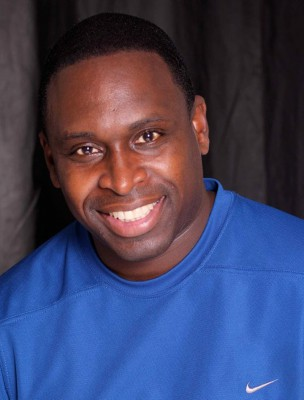

#10191 Rendezvous mit einem Engel
Alternativ: The Preacher's Wife (Englischer Titel)
Auszeichnungen: für 1 Oscars nominiert
 
 IMDB-Wertung: 5.5 / 10
IMDB-Wertung: 5.5 / 10  Metascore: 0
Metascore: 0 
Reverend Henry Biggs, einst unermüdlicher Kämpfer für das Wohl seiner Gemeinde, hat sich in seiner Arbeit aufgerieben und darüber den Glauben an sich selbst verloren. Nach einem flehentlichen Hilferuf seines verzweifelten Schäfchens entsendet der oberste Vorgesetzte des Predigers den Engel Dudley zwecks Hilfestellung auf die Erde. Dort angekommen greift der Himmelsbote nicht nur dem Pastor tatkräftig unter die Arme, sondern betätigt sich auch noch als Eheberater - denn bei Henry und Gattin Julia hängt seit längerem der Haussegen schief...
Jahr: 1996
Dauer: 123 Minuten
FSK: 0
Land: USA Studio: Buena Vista PicturesTonspuren: DD5.1 - ,
Untertitel:
Auflösung: 1080p (1920x1040) Größe: 9287 MB
Genre: Drama, Komödie, Fantasy, Liebe
Regisseur:  Penny Marshall
Penny Marshall
Drehbuch: Robert Nathan, Robert E. Sherwood, Leonardo Bercovici, Nat Mauldin, Allan Scott
Soundtrack: Hans Zimmer
Darsteller:
 Denzel Washington als Dudley
Denzel Washington als Dudley- Whitney Houston als Julia Biggs
 Courtney B. Vance als Reverend Henry Biggs
Courtney B. Vance als Reverend Henry Biggs- Gregory Hines als Joe Hamilton
-  Jenifer Lewis als Margueritte Coleman
 Loretta Devine als Beverly
Loretta Devine als Beverly- Justin Pierre Edmund als Jeremiah Biggs
- Lionel Richie als Britsloe
- Paul Bates als Saul Jeffreys
 Marcella Lowery als Anna Eldridge
Marcella Lowery als Anna Eldridge- Cissy Houston als Mrs. Havergal
- Shyheim Franklin als Teen
- Taral Hicks als Teen
 Jernard Burks als Pizza Man
Jernard Burks als Pizza Man Jaime Tirelli als Liquor Store Owner
Jaime Tirelli als Liquor Store Owner- Shari Headley als Arlene Chattan
-  Victor Williams als Robbie
 Harsh Nayyar als Christmas Tree Man
Harsh Nayyar als Christmas Tree Man- Helmar Augustus Cooper als Johnson Keeley
 Adam Alexi-Malle als Robbery Witness (uncredited)
Adam Alexi-Malle als Robbery Witness (uncredited) Anibal O. Lleras als Pizza Man (uncredited)
Anibal O. Lleras als Pizza Man (uncredited)- David Madison als Defendant (uncredited)
-  Derrick Simmons als Robber (uncredited)
- Lex Monson als Osbert
- Darvel Davis Jr. als Hakim
- William James Stiggers Jr. als Billy Eldridge
- Aaron A. McConnaughey als Teen
- Kennan Scott als Teen
- Michael Alexander Jackson als Robber
- Lizan Mitchell als Judge
- Robert Colston als Bailiff
- Juliehera Destefano als Receptionist
- Charlotte d'Amboise als Debbie Paige
- Delores Mitchell als Mary Halford
- David Langston Smyrl als Hanley's Waiter
- Mervyn Warren als Pianist
- Roy Haynes als Drummer
- George Coleman als Sax Player
- Ted Dunbar als Guitar Player
- Jamil Nasser als Bass Player
- Mary Bond Davis als Bernita
- Toukie Smith als Teleprompter Operator
- Mozelle Hawkins Allen als St. Matthew's Choir & Band Member
- Eloise Beasley als St. Matthew's Choir & Band Member
- Yolanda Beasley-Prime als St. Matthew's Choir & Band Member
- Cassondra M. Breedlove als St. Matthew's Choir & Band Member
- Dirk Chaney als St. Matthew's Choir & Band Member
- Brenda J. Childs als St. Matthew's Choir & Band Member
- Anthony Dean Copeland als St. Matthew's Choir & Band Member
- Hayward Cromartie als St. Matthew's Choir & Band Member
Datei: X:\1996\Rendezvous mit einem Engel (1996, FSK0, 1920x1040).mkv seit 18.12.2018
Festplatte: Gemischt-01+Anime
 Es gibt insgesamt 78 Filme in der Gruppe '1996'
Es gibt insgesamt 78 Filme in der Gruppe '1996'